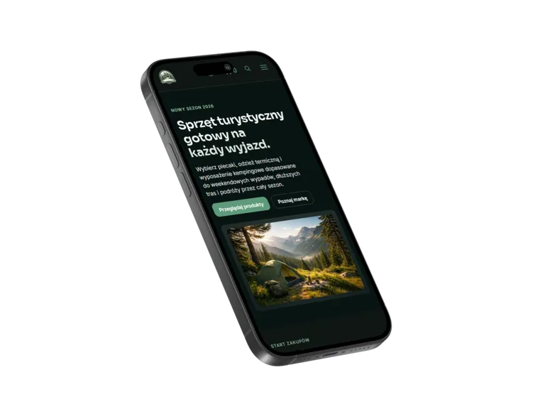
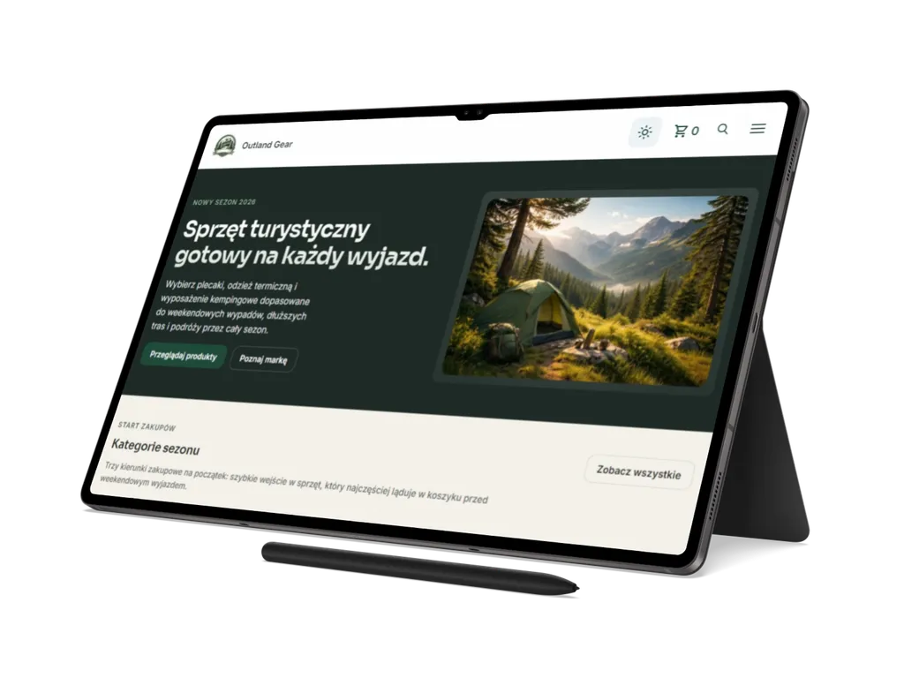

01
Outland Gear
Statyczny, wielostronicowy front-end sklepu e-commerce ze sprzętem outdoorowym, katalogiem produktów, kompletami podróżnymi, koszykiem, checkoutem i zapleczem buildowym pod publikację.
Przegląd projektu
Outland Gear to statyczna aplikacja MPA dla sklepu outdoorowego, z katalogiem, stronami produktów, koszykiem, checkoutem, formularzami i zapleczem SEO.
Zakres obejmuje katalog produktów, strony szczegółowe produktów, stronę kompletów podróżnych, kontakt, FAQ, checkout oraz strony regulaminowe.
Katalog korzysta z danych w data/products.json i obsługuje filtrowanie
po cenie, ocenie, podkategorii oraz badge'u, a także sortowanie, wyszukiwanie,
paginację typu load more i synchronizację stanu filtrów z adresem URL.
Projekt zawiera dynamiczne strony produktów i kompletów podróżnych oparte o slugi i
dane JSON, koszyk zapisujący stan w localStorage, checkout z walidacją,
formularz kontaktowy, newsletter, obsługę motywu light/dark oraz fallbacki dla
problemów z danymi lub storage.
E-commerceOutdoorTurystykaSklep online
Zakres i akcenty
Case study koncentruje się na praktycznych elementach sklepu: katalogu, danych produktowych, koszyku, checkoutcie oraz standardzie technicznym wdrożenia.
02
Produkt, koszyk i checkout
03
SEO, Netlify i testy a11y
Technologie i standard
Outland Gear został zbudowany jako wielostronicowy front-end HTML, CSS i Vanilla JavaScript, z lokalnymi danymi JSON oraz procesem buildowym dla e-commerce.
Architektura CSS jest podzielona na warstwy tokens, base,
layout, components i pages. Logika aplikacji
działa w modułach ES, a dane produktów, kategorii i kompletów są utrzymywane w
data/*.json.
-
moduły
catalog,product,cart,checkout,travel-kits,faq,newslettericontact, - PostCSS z
postcss-importicssnanooraz esbuild, - sharp, własne skrypty Node i prerender ścieżek produktów oraz kompletów,
- Playwright, axe-core i GitHub Actions dla automatyzacji testów dostępności.


Dalszy krok
Przejdź do wersji live sklepu albo wróć do pełnego portfolio.
Outland Gear pokazuje, jak statyczny front-end e-commerce może połączyć katalog, koszyk, checkout, dane produktowe i techniczne przygotowanie do publikacji.